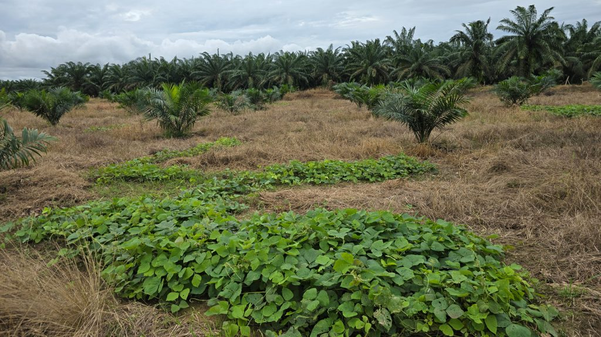
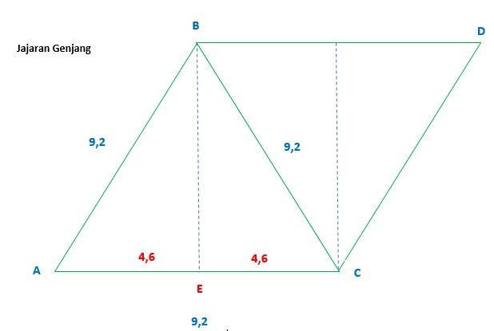
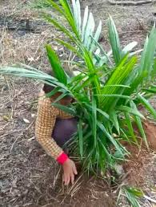

1️⃣ Penanaman LCC (Legume Cover Crop)
LCC adalah tanaman penutup tanah dari jenis kacang-kacangan seperti Centrosema pubescens, Pueraria javanica, Calopogonium mucunoides.
Tujuannya:
- Menekan pertumbuhan gulma liar.
- Meningkatkan kadar nitrogen tanah melalui fiksasi biologis.
- Mencegah erosi dan menjaga kelembapan tanah.
Contoh Perhitungan:
- Kebutuhan benih LCC = 10 kg per hektar.
- Jika luas areal 50 ha, maka benih yang dibutuhkan = 10 × 50 = 500 kg.

Gambar: Tanaman LCC di antara barisan kelapa sawit muda.
2️⃣ Pengaturan Jarak Tanam
Jarak tanam ideal kelapa sawit adalah 9 m × 9 m dengan sistem segitiga sama sisi.
Hal ini memastikan distribusi cahaya merata dan ruang tumbuh optimal.
Perhitungan Populasi Pohon:
Rumus populasi/ha = 10.000 / (jarak × jarak × 0,866)
= 10.000 / (9 × 9 × 0,866) = ~143 pohon per hektar.

Gambar: Pola segitiga sama sisi untuk jarak tanam kelapa sawit.
3️⃣ Pembuatan Lubang Tanam
Lubang tanam dibuat dengan ukuran standar 60 × 60 × 60 cm.
Tujuannya agar akar dapat berkembang bebas dan pupuk organik dapat tertampung di dasar lubang.
Langkah:
- Buat lubang 1–2 bulan sebelum tanam agar tanah mengering dan mikroba aktif.
- Masukkan pupuk dasar (misalnya kompos 5 kg per lubang).
Contoh Perhitungan:
Untuk 1 ha dengan 143 pohon → 143 × 5 kg = 715 kg kompos per hektar.
4️⃣ Penanaman
Penanaman dilakukan pada awal musim hujan untuk menghindari kekeringan.
Bibit dipindahkan dari polybag ke lubang tanam dengan hati-hati agar akar tidak rusak.
Langkah Teknis:
- Keluarkan bibit dari polybag.
- Letakkan di tengah lubang, tutup tanah setinggi leher akar.
- Padatkan tanah perlahan dan beri ajir penanda.

Gambar: Proses penanaman bibit kelapa sawit di lapangan.
5️⃣ Perawatan TBM 0 (Tanaman Belum Menghasilkan)
Masa TBM 0 adalah tahun pertama setelah tanam (0–12 bulan).
Fokus utama adalah:
- Pengendalian gulma di sekitar piringan (radius 1 m dari batang).
- Pemupukan 2–3 kali per tahun menggunakan NPK 15-15-15.
- Perbaikan drainase dan kontrol hama seperti ulat api atau tikus.
Contoh Perhitungan Pupuk:
Dosis 0,5 kg/pohon × 143 pohon = 71,5 kg NPK per hektar per kali aplikasi.

Gambar: Pemeliharaan kelapa sawit muda (TBM 0).